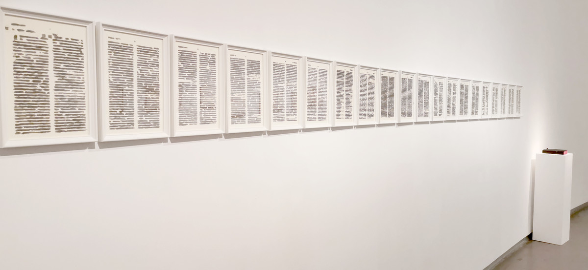
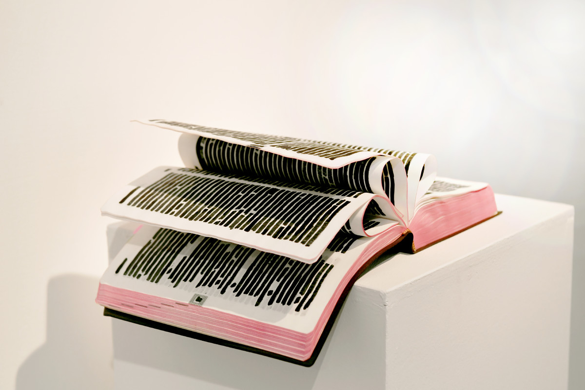
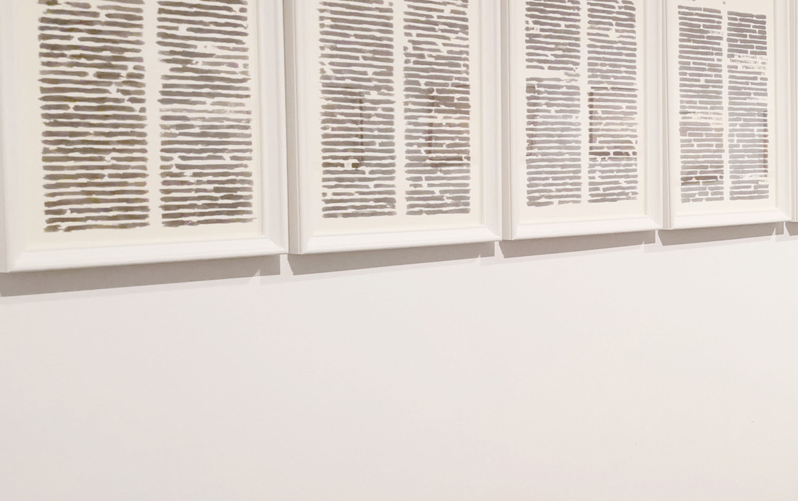
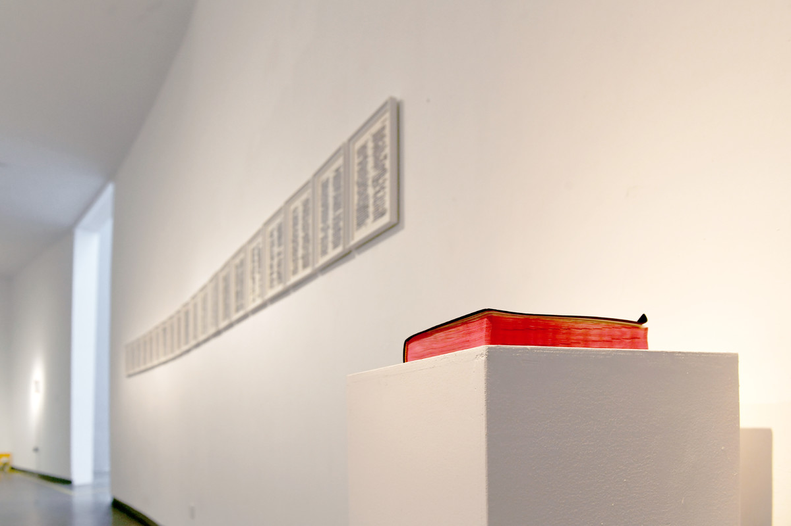

一首小诗 | A SHORT POEM

无酸纸输出、木框、纸质圣经、木质展台 木框为29.7x21cmx20 纸质圣经为29.7x21cm 展台高度为120x35x35cm 2016
Printed on paper, wooden frame, paper Bible, wooden booth, wooden frame 29.7x21cmx20, paper Bible 29.7x21cm, booth height 120x35x35cm, 2016
将一本圣经中所有的文字用黑色水笔全部涂抹掉，只剩下20个字。这些遗落在书中的字连成一首小诗：“无论我活着，还是我死去，我都是一只，快乐的牛虻。”
Blot out all but 20 words of a Bible with a black marker. The lost words form a poem: "Whether I live or die, I am a happy gadfly."
玩玩的作品总是经由超越现实而与现实联系在一起的，而且也总是通过揭示生活中的缺憾而完成对于生活的关怀。在他最新的作品：《一首小诗》里，他将一整本圣经用墨水涂掉，只留下二十个字，这二十个字隔着许多页串成了小说《牛虻》里的一首诗:’“不管我活着，还是我死去，我都是一只，快乐的牛虻”。小说中的主角，写下这首小诗的亚瑟，是被自己的生父也是天天捧着圣经的大主教蒙坦里尼判处了死刑。
玩玩其实有好几件作品涉及到他对于革命的想象，从中可以感觉出他对于自己所身处的文化环境的思索与反省。这“一首小诗”中描述的牛虻，或许就是他对于自己的期许。
——隋建国
His works are all associated with reality by being beyond the reality, and care for actual life by revealing regrets in life. In his latest creation entitled A Poem, he inked out all the words in a Bible but leaving a total of twenty Chinese characters in different pages which constituted a poem in The Gadfly. The English version of this poem is “Then am I a happy fly, if I live or if I die.” Arthur, the leading figure in the novel, who wrote this poem, was sentenced to death by his natural father Bishop Montanelli who was always carrying around a bible.
Actually, Wanwan has displayed his imagination about revolution in several works, reflecting his contemplation of the cultural environment he is in. The gadfly described in A Poem may indicate his expectations of himself.
——Sui Jianguo
展览中的石玩玩的作品《一首小诗》是“将一本圣经中所有文字用黑色水笔全部涂抹掉，只剩下20个字。这些遗落在书中的字连成一篇小诗：‘无论我活着，还是我死去，我都是一只，快乐的牛虻。’” 这首“小诗”出自爱尔兰女作家艾捷尔•丽莲•伏尼契创作的长篇小说。该书讲述了意大利革命党人亚瑟•博尔顿（牛虻）通过积极的投入革命并为之献出了生命的一生的故事。其中的一个情节是主人公得知自己信仰的神父竟然是自己的亲生父亲，由此放弃了对基督教的信仰。作品实际上是从两个维度对《圣经》的意义进行了消解，首先是对《圣经》的涂抹，其二是通过另外一本书的介入导致了《圣经》意义的坍塌。
——辛子 《看的是“书”，也不是“书”——“有框的都是书，没框的不是书”展分析》
Shi Wanwan's "A Short Poem" in the exhibition is a book of 20 words in a Bible that have been blotted out with a black marker. The words left in the book form a short poem: 'Whether I live or die, I am a happy gadfly. '" This "short poem" comes from a novel by Irish writer Ethel Lillian Voynich. The book tells the story of Arthur Bolton (gadfly), an Italian revolutionary, who devoted his life to the revolution. In one episode, the hero renounces his Christian faith after learning that the priest he believes in is his own father. In fact, the work dissolves the meaning of the Bible from two dimensions: first, it obliterates the Bible; second, it leads to the collapse of the meaning of the Bible through the intervention of another book.
-- Xin Zi, "What You See is A Book, But Not a Book" -- "All Framed Books are Books, But Unframed Books are not Books" exhibition Analysis

南京艺术学院美术馆，南京
Art Museum of Nanjing University of the Arts, Nanjing

南京艺术学院美术馆，南京
Art Museum of Nanjing University of the Arts, Nanjing

南京艺术学院美术馆，南京
Art Museum of Nanjing University of the Arts, Nanjing